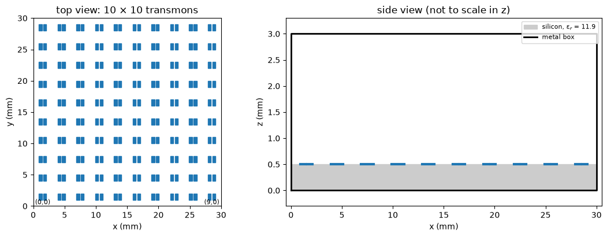
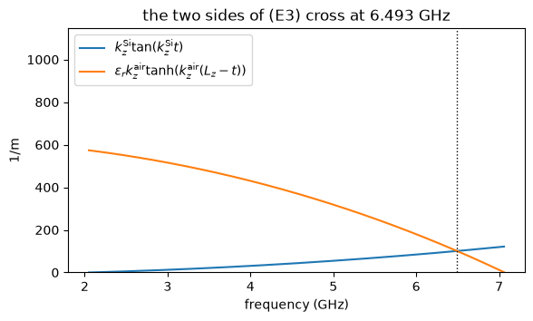
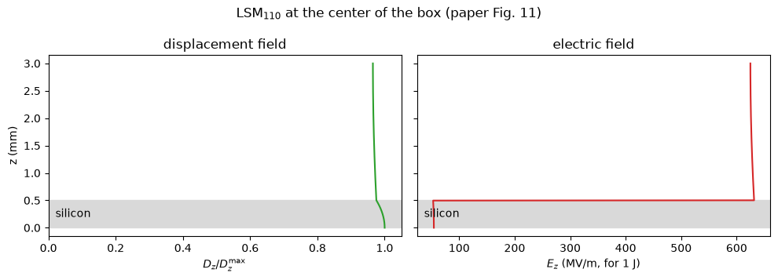
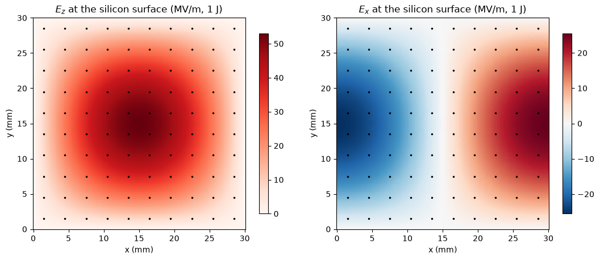
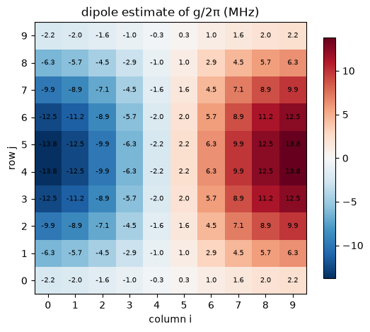

Note
This page was generated from tut/4-Analysis/4.41-The-package-mode-on-paper.ipynb.
4.41 The Package Mode on Paper¶


💡 What you need. Only NumPy, SciPy and matplotlib: this notebook is pure analysis, no mesher and no solver. It is the first of five that reproduce the paper by Molavi et al. [1] with open-source tools.
A superconducting processor sits in a metal box. The box is a microwave cavity, and its lowest modes can land right among the qubit frequencies. Every qubit then couples, weakly but measurably, to the same box mode — a channel for decay and for crosstalk between qubits that are nowhere near each other on the chip. Designing a large processor means knowing these couplings, qubit by qubit.
Molavi et al. [1] benchmark four ways of extracting them on a clean test case: a 10 × 10 array of transmons in a 30 × 30 × 3 mm box, half filled at the bottom by a silicon slab. This series reproduces their results with Quantum Metal, gmsh and scikit-fem:
Notebook |
What it computes |
Solver |
Run time |
|
|---|---|---|---|---|
4.41 |
LSM modes, Fig. 11, the dipole estimate |
analytic |
seconds |
|
4.42 |
the four methods on the two-mode circuit, the Appendix D fit |
circuit algebra |
seconds |
|
4.43 |
the design in Quantum Metal, the mesh, the package eigenmode, qubit capacitance |
gmsh + scikit-fem |
~5 min |
|
4.44 |
induced-EMF couplings of all 100 qubits, Figs. 6, 8, 9 |
gmsh + scikit-fem |
~6 min |
|
4.45 |
avoided crossing, EPR, induced EMF and impedance matrix side by side, Figs. 5, 7 |
gmsh + scikit-fem |
~6 min |
This first notebook needs no simulation at all. The box and the slab alone set the package mode, and its fields can be written down in closed form (the paper’s Appendix E). Those fields already predict the pattern of couplings across the array, and their size to within 10%.
What you’ll learn
why a silicon slab pulls the lowest box mode from 7.07 GHz down to 6.49 GHz, and what the mode looks like through the thickness of the box (Fig. 11 of the paper);
why a qubit couples to the box through the in-plane field at the chip surface, not the vertical field that dominates the mode;
how to estimate every qubit’s coupling from its electric dipole moment, and what pattern that predicts across the array.
[1]:
# In Colab, uncomment to install the dependencies of the whole series.
# !pip install -q "quantum-metal[skfem]" pymetis
[2]:
import sys
import urllib.request
from pathlib import Path
# The solver code shared by tutorials 4.41-4.45 lives in docs/tut/resources/package_modes/.
RES = Path("../resources/package_modes")
if not (
RES / "package_modes.py"
).exists(): # e.g. in Colab: fetch it next to the notebook
RES = Path("package_modes")
RES.mkdir(exist_ok=True)
urllib.request.urlretrieve(
"https://raw.githubusercontent.com/qiskit-community/qiskit-metal/main/"
"docs/tut/resources/package_modes/package_modes.py",
RES / "package_modes.py",
)
sys.path.insert(0, str(RES))
import package_modes as pm
import matplotlib.pyplot as plt
import numpy as np
from scipy.constants import c as C0, epsilon_0 as EPS0
1. The device¶
The validation device of the paper (its Fig. 4): a perfectly conducting box, a silicon slab on its floor, and 100 bare transmons on the silicon — each two rectangular paddles with a Josephson junction across the gap between them. There is no ground plane on the chip, which makes every coupling larger than in a real processor and easier to compute.
[3]:
d = pm.DEVICE
for key, value in d.items():
print(f"{key:>6} = {value}")
Lx = 30.0
Ly = 30.0
Lz = 3.0
t = 0.5
eps_r = 11.9
n = 10
pitch = 3.0
pad_w = 0.5
pad_h = 1.0
gap = 0.2
[4]:
fig, (top, side) = plt.subplots(
1, 2, figsize=(11, 4.2), gridspec_kw=dict(width_ratios=[1, 1.35])
)
# top view: the array
for (i, j), (x, y) in pm.qubit_centers().items():
for sign in (-1, 1):
x0 = x + sign * (d["gap"] / 2 + d["pad_w"] / 2) - d["pad_w"] / 2
top.add_patch(
plt.Rectangle(
(x0, y - d["pad_h"] / 2), d["pad_w"], d["pad_h"], color="tab:blue"
)
)
top.set(
xlim=(0, d["Lx"]),
ylim=(0, d["Ly"]),
aspect="equal",
xlabel="x (mm)",
ylabel="y (mm)",
title="top view: 10 × 10 transmons",
)
top.text(1.5, 1.5 - 1.2, "(0,0)", ha="center", fontsize=8)
top.text(28.5, 1.5 - 1.2, "(9,0)", ha="center", fontsize=8)
# side view: box, slab, paddles
side.add_patch(
plt.Rectangle((0, 0), d["Lx"], d["t"], color="0.8", label="silicon, ε$_r$ = 11.9")
)
side.plot(
[0, d["Lx"], d["Lx"], 0, 0],
[0, 0, d["Lz"], d["Lz"], 0],
"k",
lw=2,
label="metal box",
)
for (i, j), (x, y) in pm.qubit_centers().items():
if j == 0:
for sign in (-1, 1):
xc = x + sign * (d["gap"] + d["pad_w"]) / 2
side.plot(
[xc - d["pad_w"] / 2, xc + d["pad_w"] / 2],
[d["t"], d["t"]],
color="tab:blue",
lw=3,
)
side.set(
xlim=(-0.5, d["Lx"] + 0.5),
ylim=(-0.3, d["Lz"] + 0.3),
xlabel="x (mm)",
ylabel="z (mm)",
title="side view (not to scale in z)",
)
side.legend(loc="upper right", fontsize=8)
plt.tight_layout()
plt.show()

2. The empty box¶
Without the slab, the lowest mode of a box with \(L_z < L_x, L_y\) is \(\mathrm{TM}_{110}\). Its electric field points straight up and has the shape of the lowest drum mode,
[5]:
f_empty = C0 / 2 * np.hypot(1 / (d["Lx"] * 1e-3), 1 / (d["Ly"] * 1e-3))
print(
f"empty box, TM110: {f_empty / 1e9:.3f} GHz (paper: {pm.PAPER['f_empty'] / 1e9:.2f} GHz)"
)
empty box, TM110: 7.066 GHz (paper: 7.07 GHz)
3. Add the slab: the LSM\(_{110}\) mode¶
The silicon changes two things. The field now crosses an interface where the permittivity jumps by 11.9, and the mode slows down: some of its energy sits in a region where light is 3.4 times slower. The mode that grows out of \(\mathrm{TM}_{110}\) keeps the same in-plane shape, \(\sin(\pi x/L_x)\sin(\pi y/L_y)\), and gains a vertical profile — a cosine in the silicon and a hyperbolic cosine in the vacuum above it:
The factor \(\varepsilon_r\) makes the vertical displacement field \(D_z\) continuous across the interface. Requiring the in-plane field to be continuous too fixes the frequency, through the transcendental equation (E3) of the paper,
with \(k_0 = \omega/c\) and \(\gamma^2 = (\pi/L_x)^2 + (\pi/L_y)^2\). The mode has \(H_z = 0\) everywhere: a longitudinal-section magnetic (LSM) mode [3]. pm.lsm_mode solves (E3) with a bracketing root finder; the cell below shows the function whose root it finds.
[6]:
mode = pm.lsm_mode(1, 1)
t, Lz, er = mode.t, mode.Lz, mode.eps_r
f = np.linspace(
C0 * mode.gamma / np.sqrt(er) / (2 * np.pi) * 1.001,
C0 * mode.gamma / (2 * np.pi) * 0.999,
800,
)
k0 = 2 * np.pi * f / C0
ks, ka = np.sqrt(er * k0**2 - mode.gamma**2), np.sqrt(mode.gamma**2 - k0**2)
lhs, rhs = ks * np.tan(ks * t), er * ka * np.tanh(ka * (Lz - t))
fig, ax = plt.subplots(figsize=(6.5, 3.5))
ax.plot(f / 1e9, lhs, label=r"$k_z^{\rm Si}\tan(k_z^{\rm Si} t)$")
ax.plot(f / 1e9, rhs, label=r"$\varepsilon_r k_z^{\rm air}\tanh(k_z^{\rm air}(L_z-t))$")
ax.axvline(mode.f / 1e9, color="k", ls=":", lw=1)
ax.set(
xlabel="frequency (GHz)",
ylabel="1/m",
ylim=(0, 2 * rhs.max()),
title=f"the two sides of (E3) cross at {mode.f / 1e9:.3f} GHz",
)
ax.legend()
plt.show()

[7]:
approx = pm.lsm_mode_approx(1, 1)
P = pm.PAPER
rows = [
("f_110 (GHz)", mode.f / 1e9, approx["f"] / 1e9, P["f_si"] / 1e9),
("k_z Si (1/m)", mode.kz_si, approx["kz_si"], P["kz_si"]),
("k_z air (1/m)", mode.kz_air, approx["kz_air"], P["kz_air"]),
("E0x for 1 J (MV/m)", mode.E0x / 1e6, approx["E0x"] / 1e6, P["E0x_110"] / 1e6),
]
print(f"{'':>20} {'exact (E3)':>11} {'closed form':>12} {'paper':>8}")
for name, a, b, p in rows:
print(f"{name:>20} {a:11.3f} {b:12.3f} {p:8.3f}")
exact (E3) closed form paper
f_110 (GHz) 6.493 6.504 6.490
k_z Si (1/m) 445.447 446.340 445.400
k_z air (1/m) 58.440 57.864 58.400
E0x for 1 J (MV/m) 25.561 25.116 25.560
The closed-form column uses the approximations at the end of Appendix E, valid because \(k_z t\) and \(k_z^{\rm air}(L_z-t)\) are small (0.22 and 0.15): the slab and the vacuum act like two capacitors in series, with an effective permittivity \(\varepsilon_{\rm eff} = [\varepsilon_r^{-1}(t/L_z) + (1-t/L_z)]^{-1} \approx 1.18\), and \(f \approx f_{\rm empty}/\sqrt{\varepsilon_{\rm eff}}\).
4. The mode through the thickness (Fig. 11)¶
Because \(k_z\) is small in both layers, the fields barely vary with height: the displacement field \(D_z\) is nearly uniform from floor to lid, and \(E_z\) is 11.9 times larger in the vacuum than in the silicon.
[8]:
z = np.linspace(0, Lz, 600)
Ez = mode.Ez(z)
Dz = np.where(z <= t, er, 1.0) * EPS0 * Ez
fig, ax = plt.subplots(1, 2, figsize=(10, 3.6), sharey=True)
ax[0].plot(Dz / Dz.max(), z * 1e3, color="tab:green")
ax[0].set(
xlabel=r"$D_z / D_z^{\max}$",
ylabel="z (mm)",
title="displacement field",
xlim=(0, 1.05),
)
ax[1].plot(Ez / 1e6, z * 1e3, color="tab:red")
ax[1].set(xlabel=r"$E_z$ (MV/m, for 1 J)", title="electric field")
for a in ax:
a.axhspan(0, t * 1e3, color="0.85", zorder=0)
a.text(0.02, t * 1e3 / 2, "silicon", transform=a.get_yaxis_transform(), va="center")
plt.suptitle("LSM$_{110}$ at the center of the box (paper Fig. 11)")
plt.tight_layout()
plt.show()
print(
f"E_z jumps by {mode.Ez(t + 1e-12) / mode.Ez(t - 1e-12):.2f} at the silicon surface"
)

E_z jumps by 11.90 at the silicon surface
5. What the qubits feel: the in-plane field¶
A transmon’s two paddles sit flat on the silicon, side by side along \(x\). In the qubit mode their charges are equal and opposite, so the qubit is a small electric dipole pointing along \(x\), and it responds to \(E_x\) — not to \(E_z\), which pushes both paddles the same way.
In an empty box \(\mathrm{TM}_{110}\) has no \(E_x\) at all. The slab creates one. The field lines of \(E_z\) bend at the interface, and at the silicon surface the mode acquires (Eqs. E7, E8)
with \(E_{0,x} = -E_{0,z}(\pi/L_x)\,k_z^{\rm Si}\sin(k_z^{\rm Si}t)/\gamma^2\) (Eq. E9) — negative where \(E_z > 0\), because \(E_z\) falls with height in the silicon. The paper quotes its magnitude, and so does mode.E0x. The field is proportional to \(\partial_x E_z\): it vanishes where \(E_z\) peaks, at the center of the box, and is largest along the walls \(x = 0\) and \(x = L_x\), with opposite signs on the two sides.
[9]:
x = np.linspace(0, mode.Lx, 201)
y = np.linspace(0, mode.Ly, 201)
X, Y = np.meshgrid(x, y)
Ez_top = (
mode.Ez(np.array([t]))[0]
* np.sin(np.pi * X / mode.Lx)
* np.sin(np.pi * Y / mode.Ly)
)
Ex_top = mode.Ex_surface(X, Y)
fig, ax = plt.subplots(1, 2, figsize=(11, 4.4))
for a, F, name, cmap in (
(ax[0], Ez_top, "$E_z$", "Reds"),
(ax[1], Ex_top, "$E_x$", "RdBu_r"),
):
lim = np.abs(F).max() / 1e6
im = a.pcolormesh(
X * 1e3,
Y * 1e3,
F / 1e6,
cmap=cmap,
vmin=-lim if cmap == "RdBu_r" else 0,
vmax=lim,
shading="auto",
)
xs = [q[0] for q in pm.qubit_centers().values()]
ys = [q[1] for q in pm.qubit_centers().values()]
a.plot(xs, ys, "k.", ms=3)
a.set(
aspect="equal",
xlabel="x (mm)",
ylabel="y (mm)",
title=f"{name} at the silicon surface (MV/m, 1 J)",
)
plt.colorbar(im, ax=a, shrink=0.85)
plt.tight_layout()
plt.show()

6. The electric-dipole estimate of every coupling¶
Treat each qubit as a dipole \(p_x\) in the field \(E_x\) of the package mode. The interaction energy \(p_x E_x\), with both mode energies set to 1 J and rms instead of peak amplitudes, gives the capacitive coupling efficiency (Eq. 16 of the paper)
The paper takes \(p_x = 3.41\times10^{-10}\) C·m for a qubit with 1 J of energy from its HFSS eigenmode (notebook 4.43 computes it with our own electrostatics). Then every coupling follows the single pattern
[10]:
kC, A = pm.dipole_coupling(P["px"], mode)
print(f"k_C at the field maximum = {kC:.3e}")
print(
f"A/2pi = {A / 1e6:.2f} MHz (paper, dipole estimate: {P['A_110_dipole'] / 1e6:.1f} MHz;"
f" full-wave fit: {P['A_110'] / 1e6:.1f} MHz)"
)
k_C at the field maximum = 4.358e-03
A/2pi = 14.15 MHz (paper, dipole estimate: 14.2 MHz; full-wave fit: 15.6 MHz)
The prediction for the array: couplings antisymmetric about the middle column, largest in the outer columns and toward the middle rows, and — because the dipoles point along \(x\) — a different pattern along \(x\) than along \(y\). Notebook 4.44 compares this map with the full-wave result.
[11]:
g_pred = np.zeros((10, 10))
for (i, j), (xq, yq) in pm.qubit_centers().items():
g_pred[j, i] = (
A * mode.Ex_surface(xq * 1e-3, yq * 1e-3) / mode.E0x
) # the sign of g follows E_x
fig, ax = plt.subplots(figsize=(6.2, 5.2))
lim = np.abs(g_pred).max() / 1e6
im = ax.imshow(g_pred / 1e6, origin="lower", cmap="RdBu_r", vmin=-lim, vmax=lim)
for i, j in pm.qubit_centers():
ax.text(i, j, f"{g_pred[j, i] / 1e6:.1f}", ha="center", va="center", fontsize=7)
ax.set(
xlabel="column i",
ylabel="row j",
title="dipole estimate of g/2π (MHz)",
xticks=range(10),
yticks=range(10),
)
plt.colorbar(im, ax=ax, shrink=0.85)
plt.show()

The second mode: LSM\(_{210}\)¶
The same reasoning applies to every LSM\(_{ab0}\) mode. For LSM\(_{210}\) the in-plane field carries an extra factor \(a = 2\), the frequency is higher, and \(E_{0,x}\) is nearly unchanged, so the model predicts a coupling amplitude larger by about \(2\,\omega_{210}/\omega_{110}\).
[12]:
mode2 = pm.lsm_mode(2, 1)
kC2, A2 = pm.dipole_coupling(P["px"], mode2)
print(
f"LSM210: f = {mode2.f / 1e9:.2f} GHz (paper {P['f_lsm210'] / 1e9:.2f}),"
f" E0x = {mode2.E0x / 1e6:.2f} MV/m (paper {P['E0x_210'] / 1e6:.2f})"
)
print(
f"A_210/2pi = {A2 / 1e6:.1f} MHz (paper, dipole estimate: {P['A_210_dipole'] / 1e6:.1f} MHz)"
)
print(f"A_210/A_110 = {A2 / A:.3f}; 2 w_210 / w_110 = {2 * mode2.f / mode.f:.3f}")
LSM210: f = 10.24 GHz (paper 10.23), E0x = 26.25 MV/m (paper 26.25)
A_210/2pi = 45.8 MHz (paper, dipole estimate: 45.7 MHz)
A_210/A_110 = 3.238; 2 w_210 / w_110 = 3.153
Summary¶
Quantity |
This notebook |
Paper |
|---|---|---|
empty box, TM\(_{110}\) |
7.07 GHz |
7.07 GHz |
with silicon, LSM\(_{110}\) |
6.49 GHz |
6.49 GHz |
\(k_z^{\rm Si}\), \(k_z^{\rm air}\) |
445.4, 58.4 m\(^{-1}\) |
445.4, 58.4 m\(^{-1}\) |
\(E_{0,x}\) (1 J) |
25.56 MV/m |
25.56 MV/m |
dipole estimate of \(A/2\pi\) |
14.2 MHz |
14.2 MHz |
dipole estimate of \(A_{210}/2\pi\) |
45.8 MHz |
45.7 MHz |
The whole coupling map rests on one mechanism: the slab tilts the package field at the chip surface, and each transmon’s dipole picks up the tilt.
Where to go next¶
4.42 Four ways to measure a coupling — the four extraction methods of the paper, first on a two-mode circuit where every answer is known exactly.
4.43 Mesh and solve the 10 × 10 processor — the same box, now with the paddles, as a Quantum Metal design meshed with gmsh and solved with a finite-element Maxwell solver.
Change the slab thickness in
pm.lsm_mode(1, 1, t=0.25)and watch \(E_{0,x}\) — and with it every coupling — scale almost linearly with \(t\) (Eq. E15).
References¶
Molavi, E. Forati, Y. Zhang, A. R. Klots, J. Atalaya, B. W. Langley, D. A. Timucin, M. Nazari, G. Khan, Z. K. Minev, A. N. Korotkov, M. H. Devoret, “Extracting electromagnetic bare mode couplings in large superconducting quantum processors,” arXiv:2609.22442 (2026).
Minev, Z. Leghtas, S. O. Mundhada, L. Christakis, I. M. Pop, M. H. Devoret, “Energy-participation quantization of Josephson circuits,” npj Quantum Inf. 7, 131 (2021). doi:10.1038/s41534-021-00461-8
Balanis, Advanced Engineering Electromagnetics, 2nd ed. (Wiley, 2012) — LSM modes of a partially filled waveguide.
Geuzaine, J.-F. Remacle, “Gmsh: A 3-D finite element mesh generator with built-in pre- and post-processing facilities,” Int. J. Numer. Methods Eng. 79, 1309–1331 (2009). doi:10.1002/nme.2579
Gustafsson, G. D. McBain, “scikit-fem: A Python package for finite element assembly,” J. Open Source Softw. 5, 2369 (2020). doi:10.21105/joss.02369
For more information, review the Introduction to Quantum Computing and Quantum Hardware lectures below
|
Lecture Video | Lecture Notes | Lab |
|
Lecture Video | Lecture Notes | Lab |
|
Lecture Video | Lecture Notes | Lab |
|
Lecture Video | Lecture Notes | Lab |
|
Lecture Video | Lecture Notes | Lab |
|
Lecture Video | Lecture Notes | Lab |